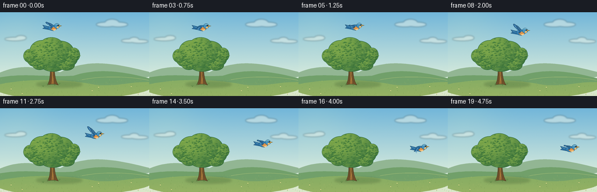
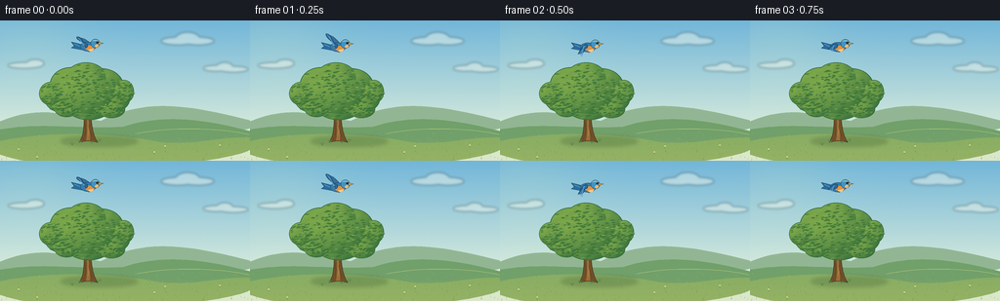

CODING AGENTS AS PIXEL WORLD MODELS
traex/GPT-6.1-Sol · dynamic_spatial_relationship_0045
点击播放 · 原生 RGB 像素
逐轮保存的候选
回放视频、检查图与代码变化。
每份候选均可单独播放。实际图片检查记录在下方工具轨迹中。
候选 01播放与检查图
点击播放 · 原生 RGB 像素


展开代码变化
--- 上一保存版本
+++ 本次保存版本
@@ -0,0 +1,186 @@
+from pathlib import Path
+import json, math
+import numpy as np
+from PIL import Image, ImageDraw, ImageFilter
+import artifact_io
+
+ROOT = Path(__file__).resolve().parent
+SPEC = json.loads((ROOT / 'task_spec.json').read_text())
+W, H = SPEC['width'], SPEC['height']
+S = 4
+rng = np.random.default_rng(418)
+
+def polygon(draw, points, fill, outline=None, width=1):
+ pts = [(round(x*S), round(y*S)) for x,y in points]
+ draw.polygon(pts, fill=fill)
+ if outline:
+ draw.line(pts+[pts[0]], fill=outline, width=max(1,round(width*S)), joint='curve')
+
+def ellipse(draw, bounds, fill, outline=None, width=1):
+ draw.ellipse(tuple(round(v*S) for v in bounds), fill=fill, outline=outline, width=max(1,round(width*S)))
+
+def line(draw, points, fill, width=1):
+ draw.line([(round(x*S),round(y*S)) for x,y in points], fill=fill, width=max(1,round(width*S)), joint='curve')
+
+def bezier(points, count=24):
+ p=np.asarray(points,float)
+ t=np.linspace(0,1,count)[:,None]
+ return ((1-t)**3*p[0]+3*(1-t)**2*t*p[1]+3*(1-t)*t*t*p[2]+t**3*p[3]).tolist()
+
+def shape(draw, segments, fill, outline=None, width=.6):
+ pts=[]
+ for seg in segments:
+ pts.extend(bezier(seg))
+ polygon(draw,pts,fill,outline,width)
+
+# A locked-off, softly textured summer landscape.
+yy,xx=np.mgrid[0:H*S,0:W*S]
+y=yy/(H*S)
+upper=np.array([114,182,217.]); lower=np.array([219,237,220.])
+f=np.clip(y/.81,0,1)[...,None]
+a=upper[None,None,:]*(1-f)+lower[None,None,:]*f
+sun=np.exp(-((xx/S-28)**2+(yy/S-14)**2)/3800)[...,None]
+a+=sun*np.array([12,7,-2])
+a+=rng.normal(0,.35,(H*S,W*S,1))
+background=Image.fromarray(np.uint8(np.clip(a,0,255)),'RGB')
+d=ImageDraw.Draw(background)
+
+# Thin, warm-white clouds stay well away from the initial bird.
+cloud=Image.new('RGBA',background.size)
+cd=ImageDraw.Draw(cloud)
+for x,y,rx,ry in [(182,21,17,4),(192,18,12,6),(203,21,16,4),(221,49,13,3),(230,47,8,4),(239,50,15,3),(25,46,17,3),(36,44,9,4)]:
+ ellipse(cd,(x-rx,y-ry,x+rx,y+ry),(250,251,237,105))
+cloud=cloud.filter(ImageFilter.GaussianBlur(1.25*S))
+background=Image.alpha_composite(background.convert('RGBA'),cloud).convert('RGB'); d=ImageDraw.Draw(background)
+shape(d, [[(-10,108),(34,86),(62,95),(103,103)],[(103,103),(149,80),(190,85),(266,105)],[(266,105),(265,122),(10,131),(-10,108)]], (146,182,147))
+shape(d, [[(-10,114),(33,103),(78,112),(126,109)],[(126,109),(172,94),(217,103),(266,116)],[(266,116),(280,150),(-20,150),(-10,114)]], (113,160,106))
+shape(d, [[(-10,126),(44,112),(119,115),(159,124)],[(159,124),(203,130),(228,116),(266,121)],[(266,121),(278,155),(-20,161),(-10,126)]], (136,173,99))
+# A subtle grass gradient in the foreground.
+ground=Image.new('RGBA',background.size)
+gd=ImageDraw.Draw(ground)
+for j in range(119,H):
+ alpha=int(45*(j-119)/(H-119))
+ line(gd,[(0,j),(256,j)],(213,199,99,alpha),1.1)
+background=Image.alpha_composite(background.convert('RGBA'),ground).convert('RGB'); d=ImageDraw.Draw(background)
+# Field contours and unobtrusive small tufts.
+line(d,bezier([(140,116),(178,108),(229,111),(255,117)]),(167,190,119),.65)
+for _ in range(260):
+ x=float(rng.uniform(0,256)); y=float(rng.uniform(115,145))
+ length=float(rng.uniform(.65,2.8))*(.5+.5*(y-115)/30)
+ color=[(119,151,77),(157,179,103),(173,185,108),(108,146,80)][rng.integers(4)]
+ line(d,[(x,y),(x+rng.uniform(-.9,.9),y-length)],color,.35)
+# Grounded tree shadow, blurred rather than a hard oval.
+shadow=Image.new('RGBA',background.size); sd=ImageDraw.Draw(shadow)
+ellipse(sd,(62,119,141,129),(50,86,45,65))
+ellipse(sd,(77,121,108,126),(37,70,37,55))
+shadow=shadow.filter(ImageFilter.GaussianBlur(2*S))
+background=Image.alpha_composite(background.convert('RGBA'),shadow).convert('RGB'); d=ImageDraw.Draw(background)
+# Roots, tapering trunk and branching forks.
+shape(d,[[(81,125),(88,115),(87,91),(83,75)],[(83,75),(89,78),(93,78),(96,73)],[(96,73),(92,94),(92,113),(100,125)],[(100,125),(92,123),(88,123),(81,125)]],(112,79,42),(77,68,39),.65)
+shape(d,[[(89,102),(83,92),(70,87),(66,72)],[(66,72),(75,87),(86,88),(92,95)],[(92,95),(92,98),(91,101),(89,102)]],(110,78,43))
+shape(d,[[(91,96),(95,86),(108,79),(114,65)],[(114,65),(113,83),(101,92),(92,104)],[(92,104),(91,102),(91,100),(91,96)]],(115,82,42))
+shape(d,[[(88,123),(90,113),(89,95),(86,84)],[(86,84),(91,92),(92,115),(92,123)],[(92,123),(90,123),(89,123),(88,123)]],(156,111,55))
+for pts in [[(87,118),(88,112),(87,105)],[(94,119),(91,110),(92,103)],[(86,99),(88,98),(89,92)],[(85,122),(86,120)]]:
+ line(d,pts,(83,67,38),.6)
+line(d,[(90,109),(90.5,113),(90,118)],(188,135,66),.5)
+# Organic oak canopy: interlocked shaded lobes, then selective tiny leaf strokes.
+lobes=[(62,81,16,13),(116,80,17,14),(91,87,24,15),(72,66,21,18),(103,66,23,17),(88,59,21,16),(52,75,12,12),(127,73,10,12),(68,89,13,10),(114,91,14,9),(87,75,30,21)]
+for cx,cy,rx,ry in lobes:
+ ellipse(d,(cx-rx,cy-ry,cx+rx,cy+ry),(44,104,61))
+# Each lobe is lit from upper left, with soft natural variation.
+fol=Image.new('RGBA',background.size)
+fa=np.zeros((H*S,W*S,4),np.uint8)
+for n,(cx,cy,rx,ry) in enumerate(lobes):
+ minx=max(0,int((cx-rx)*S)); maxx=min(W*S,int((cx+rx)*S)+1)
+ miny=max(0,int((cy-ry)*S)); maxy=min(H*S,int((cy+ry)*S)+1)
+ ly,lx=np.mgrid[miny:maxy,minx:maxx]
+ dx=(lx/S-cx)/rx; dy=(ly/S-cy)/ry
+ rr=dx*dx+dy*dy
+ mask=rr<.94
+ light=np.clip(.73-.27*dy-.24*dx-.18*rr,0,1)
+ c0=np.array([43,102,58]); c1=np.array([132,173,76])
+ color=c0+light[...,None]*(c1-c0)
+ variation=2.0*np.sin(lx/7+ly/11)+1.2*np.cos(ly/4)
+ color+=variation[...,None]
+ patch=fa[miny:maxy,minx:maxx]
+ patch[mask,:3]=np.uint8(np.clip(color[mask],0,255)); patch[mask,3]=255
+fol=Image.fromarray(fa,'RGBA')
+background=Image.alpha_composite(background.convert('RGBA'),fol).convert('RGB'); d=ImageDraw.Draw(background)
+for i in range(670):
+ cx,cy,rx,ry=lobes[rng.integers(len(lobes))]
+ x=cx+rng.uniform(-.97,.97)*rx; y=cy+rng.uniform(-.97,.97)*ry
+ if ((x-cx)/rx)**2+((y-cy)/ry)**2>.88: continue
+ # sparse strokes retain a coherent crown rather than looking like confetti
+ bright=max(0,min(1,.7-.25*(y-cy)/ry-.22*(x-cx)/rx))
+ if rng.random()<.35:
+ color=(int(80+45*bright),int(131+37*bright),int(63+12*bright))
+ else:
+ color=(int(44+30*bright),int(102+27*bright),int(53+9*bright))
+ length=rng.uniform(1.0,2.6)
+ shape(d,[[(x-length,y+.3),(x-.4,y-1),(x+.6,y-.6),(x+length,y-.2)],[(x+length,y-.2),(x+.4,y+.6),(x-.6,y+.8),(x-length,y+.3)]],color)
+# Small grass stalks at the roots.
+for x,y in [(82,125),(94,126),(102,124),(74,128)]:
+ for offset in [-2,0,1.7]:
+ line(d,[(x,y),(x+offset,y-3.0+abs(offset)*.35)],(92,133,68),.55)
+for x,y in [(19,132),(38,140),(158,135),(225,128),(237,140),(169,129)]:
+ line(d,[(x,y+2),(x+.2,y-1)],(92,141,72),.4)
+ ellipse(d,(x-.7,y-.8,x+.7,y+.6),(239,223,148))
+
+# Bird drawn in local coordinates: blue wings, warm breast, eye and pointed beak.
+def draw_bird(image, x, y, phase):
+ d=ImageDraw.Draw(image)
+ def P(p): return [(x+a,y+b) for a,b in p]
+ def poly(p,c,o=None,w=.45): polygon(d,P(p),c,o,w)
+ def ell(b,c,o=None,w=.4): ellipse(d,(x+b[0],y+b[1],x+b[2],y+b[3]),c,o,w)
+ def ln(p,c,w=.5): line(d,P(p),c,w)
+ def sh(segs,c,o=None,w=.45): shape(d,[P(seg) for seg in segs],c,o,w)
+ flap=math.sin(phase)
+ up=max(0,flap); down=max(0,-flap)
+ # The distant wing appears behind body, with a slightly different angle.
+ tip=(-5-4*up, -3-11*up+10*down)
+ sh([[(-2,-2),(-7,-4+5*down),(tip[0]-3,tip[1]+3),tip],
+ [tip,(tip[0]+4,tip[1]+1),(-1,-6), (3,-2)],
+ [(3,-2),(2,0),(0,0),(-2,-2)]],(55,112,153),(36,78,111),.5)
+ # Forked, tapered tail, trailing to the left.
+ poly([(-5,-1),(-17,-4),(-14,0),(-17,2),(-6,4)],(41,108,158),(30,72,99),.55)
+ ln([(-14,-2),(-7,1)],(104,169,198),.65)
+ # Rounded airborne body and amber breast.
+ ell((-8,-4,8,5.6),(49,125,177),(31,78,107),.55)
+ sh([[(-4,1),(-1,-1),(5,-1),(7,1)],[(7,1),(7,6),(-1,7),(-4,1)]],(221,147,73))
+ sh([[(0,4),(3,3),(6,3),(6,3)],[(6,3),(5,6),(1,6),(0,4)]],(249,201,133))
+ # Near wing with visible primary feathers through the entire stroke.
+ tip=(-10-3*up, -3-13*up+13*down)
+ shoulder=(-1,-2)
+ sh([[shoulder,(-6,-4),(tip[0]-1,tip[1]+3),tip],
+ [tip,(tip[0]+2,tip[1]-.8),(tip[0]+6,tip[1]+1),(-3,2)],
+ [(-3,2),(-1,2),(1,0),shoulder]],(38,103,155),(26,67,99),.55)
+ for i in range(4):
+ start=(-3.0-i*.55,-.7)
+ end=(tip[0]+1.0+i*1.0,tip[1]+.7+i*.8)
+ ln([start,end],(78+7*i,147+4*i,189+3*i),.45)
+ # The head remains recognizable and stable as the wings flap.
+ ell((2.8,-7.0,12.2,2.0),(67,146,191),(31,81,113),.45)
+ sh([[(4,-5),(6,-7),(10,-6.7),(11,-4.8)],[(11,-4.8),(8,-5.2),(6,-4.8),(4,-5)]],(123,189,213))
+ sh([[(7,0),(8,-2),(10,-2),(11,-.5)],[(11,-.5),(10,2.3),(7,2),(7,0)]],(238,187,111))
+ poly([(11,-4),(16,-2.8),(11,-1.1)],(229,169,65),(102,85,46),.4)
+ ln([(12,-2.55),(15,-2.8)],(120,94,43),.3)
+ ell((8.3,-4.8,10.55,-2.6),(20,35,43))
+ ell((8.65,-4.6,9.3,-3.95),(255,252,224))
+ # Small tucked feet do not look like landing gear.
+ ln([(-.8,5),(.8,6),(2.2,5.7)],(100,79,48),.55)
+
+frames=[]
+for i in range(SPEC['frames']):
+ # Establish 'above' for the first second, then a gentle rightward descent.
+ u=np.clip((i-3)/14,0,1)
+ smooth=u*u*(3-2*u)
+ x=90+120*smooth
+ y=26+44*smooth-6*math.sin(math.pi*u)
+ y+=.65*math.sin(i*.9)
+ phase=i*1.78+.5
+ frame=background.copy()
+ draw_bird(frame,float(x),float(y),phase)
+ frame=frame.resize((W,H),Image.Resampling.LANCZOS)
+ frames.append(np.asarray(frame,dtype=np.uint8))
+artifact_io.save(np.stack(frames),ROOT)
+print(f'Saved {len(frames)} RGB frames ({W}x{H}) at {SPEC["fps"]} fps.')
可观测工具轨迹
实际执行的命令与返回图片。
命令 1exit 0
/bin/bash -lc 'ls -la && cat prompt.txt && cat GENERATION_RULES.md && cat task_spec.json'
命令 2exit 0
/bin/bash -lc 'cat artifact_io.py && find . -maxdepth 2 -type f'
命令 3exit 0
/bin/bash -lc "cat > generate.py <<'PY'
from pathlib import Path
import json, math
import numpy as np
from PIL import Image, ImageDraw, ImageFilter
import artifact_io
ROOT = Path(__file__).resolve().parent
SPEC = json.loads((ROOT / 'task_spec.json').read_text())
W, H = SPEC['width'], SPEC['height']
S = 4
rng = np.random.default_rng(418)
def polygon(draw, points, fill, outline=None, width=1):
pts = [(round(x*S), round(y*S)) for x,y in points]
draw.polygon(pts, fill=fill)
if outline:
draw.line(pts+[pts[0]], fill=outline, width=max(1,round(width*S)), joint='curve')
def ellipse(draw, bounds, fill, outline=None, width=1):
draw.ellipse(tuple(round(v*S) for v in bounds), fill=fill, outline=outline, width=max(1,round(width*S)))
def line(draw, points, fill, width=1):
draw.line([(round(x*S),round(y*S)) for x,y in points], fill=fill, width=max(1,round(width*S)), joint='curve')
def bezier(points, count=24):
p=np.asarray(points,float)
t=np.linspace(0,1,count)[:,None]
return ((1-t)**3*p[0]+3*(1-t)**2*t*p[1]+3*(1-t)*t*t*p[2]+t**3*p[3]).tolist()
def shape(draw, segments, fill, outline=None, width=.6):
pts=[]
for seg in segments:
pts.extend(bezier(seg))
polygon(draw,pts,fill,outline,width)
# A locked-off, softly textured summer landscape.
yy,xx=np.mgrid[0:H*S,0:W*S]
y=yy/(H*S)
upper=np.array([114,182,217.]); lower=np.array([219,237,220.])
f=np.clip(y/.81,0,1)[...,None]
a=upper[None,None,:]*(1-f)+lower[None,None,:]*f
sun=np.exp(-((xx/S-28)**2+(yy/S-14)**2)/3800)[...,None]
a+=sun*np.array([12,7,-2])
a+=rng.normal(0,.35,(H*S,W*S,1))
background=Image.fromarray(np.uint8(np.clip(a,0,255)),'RGB')
d=ImageDraw.Draw(background)
# Thin, warm-white clouds stay well away from the initial bird.
cloud=Image.new('RGBA',background.size)
cd=ImageDraw.Draw(cloud)
for x,y,rx,ry in [(182,21,17,4),(192,18,12,6),(203,21,16,4),(221,49,13,3),(230,47,8,4),(239,50,15,3),(25,46,17,3),(36,44,9,4)]:
ellipse(cd,(x-rx,y-ry,x+rx,y+ry),(250,251,237,105))
cloud=cloud.filter(ImageFilter.GaussianBlur(1.25*S))
background=Image.alpha_composite(background.convert('RGBA'),cloud).convert('RGB'); d=ImageDraw.Draw(background)
shape(d, [[(-10,108),(34,86),(62,95),(103,103)],[(103,103),(149,80),(190,85),(266,105)],[(266,105),(265,122),(10,131),(-10,108)]], (146,182,147))
shape(d, [[(-10,114),(33,103),(78,112),(126,109)],[(126,109),(172,94),(217,103),(266,116)],[(266,116),(280,150),(-20,150),(-10,114)]], (113,160,106))
shape(d, [[(-10,126),(44,112),(119,115),(159,124)],[(159,124),(203,130),(228,116),(266,121)],[(266,121),(278,155),(-20,161),(-10,126)]], (136,173,99))
# A subtle grass gradient in the foreground.
ground=Image.new('RGBA',background.size)
gd=ImageDraw.Draw(ground)
for j in range(119,H):
alpha=int(45*(j-119)/(H-119))
line(gd,[(0,j),(256,j)],(213,199,99,alpha),1.1)
background=Image.alpha_composite(background.convert('RGBA'),ground).convert('RGB'); d=ImageDraw.Draw(background)
# Field contours and unobtrusive small tufts.
line(d,bezier([(140,116),(178,108),(229,111),(255,117)]),(167,190,119),.65)
for _ in range(260):
x=float(rng.uniform(0,256)); y=float(rng.uniform(115,145))
length=float(rng.uniform(.65,2.8))*(.5+.5*(y-115)/30)
color=[(119,151,77),(157,179,103),(173,185,108),(108,146,80)][rng.integers(4)]
line(d,[(x,y),(x+rng.uniform(-.9,.9),y-length)],color,.35)
# Grounded tree shadow, blurred rather than a hard oval.
shadow=Image.new('RGBA',background.size); sd=ImageDraw.Draw(shadow)
ellipse(sd,(62,119,141,129),(50,86,45,65))
ellipse(sd,(77,121,108,126),(37,70,37,55))
shadow=shadow.filter(ImageFilter.GaussianBlur(2*S))
background=Image.alpha_composite(background.convert('RGBA'),shadow).convert('RGB'); d=ImageDraw.Draw(background)
# Roots, tapering trunk and branching forks.
shape(d,[[(81,125),(88,115),(87,91),(83,75)],[(83,75),(89,78),(93,78),(96,73)],[(96,73),(92,94),(92,113),(100,125)],[(100,125),(92,123),(88,123),(81,125)]],(112,79,42),(77,68,39),.65)
shape(d,[[(89,102),(83,92),(70,87),(66,72)],[(66,72),(75,87),(86,88),(92,95)],[(92,95),(92,98),(91,101),(89,102)]],(110,78,43))
shape(d,[[(91,96),(95,86),(108,79),(114,65)],[(114,65),(113,83),(101,92),(92,104)],[(92,104),(91,102),(91,100),(91,96)]],(115,82,42))
shape(d,[[(88,123),(90,113),(89,95),(86,84)],[(86,84),(91,92),(92,115),(92,123)],[(92,123),(90,123),(89,123),(88,123)]],(156,111,55))
for pts in [[(87,118),(88,112),(87,105)],[(94,119),(91,110),(92,103)],[(86,99),(88,98),(89,92)],[(85,122),(86,120)]]:
line(d,pts,(83,67,38),.6)
line(d,[(90,109),(90.5,113),(90,118)],(188,135,66),.5)
# Organic oak canopy: interlocked shaded lobes, then selective tiny leaf strokes.
lobes=[(62,81,16,13),(116,80,17,14),(91,87,24,15),(72,66,21,18),(103,66,23,17),(88,59,21,16),(52,75,12,12),(127,73,10,12),(68,89,13,10),(114,91,14,9),(87,75,30,21)]
for cx,cy,rx,ry in lobes:
ellipse(d,(cx-rx,cy-ry,cx+rx,cy+ry),(44,104,61))
# Each lobe is lit from upper left, with soft natural variation.
fol=Image.new('RGBA',background.size)
fa=np.zeros((H*S,W*S,4),np.uint8)
for n,(cx,cy,rx,ry) in enumerate(lobes):
minx=max(0,int((cx-rx)*S)); maxx=min(W*S,int((cx+rx)*S)+1)
miny=max(0,int((cy-ry)*S)); maxy=min(H*S,int((cy+ry)*S)+1)
ly,lx=np.mgrid[miny:maxy,minx:maxx]
dx=(lx/S-cx)/rx; dy=(ly/S-cy)/ry
rr=dx*dx+dy*dy
mask=rr<.94
light=np.clip(.73-.27*dy-.24*dx-.18*rr,0,1)
c0=np.array([43,102,58]); c1=np.array([132,173,76])
color=c0+light[...,None]*(c1-c0)
variation=2.0*np.sin(lx/7+ly/11)+1.2*np.cos(ly/4)
color+=variation[...,None]
patch=fa[miny:maxy,minx:maxx]
patch[mask,:3]=np.uint8(np.clip(color[mask],0,255)); patch[mask,3]=255
fol=Image.fromarray(fa,'RGBA')
background=Image.alpha_composite(background.convert('RGBA'),fol).convert('RGB'); d=ImageDraw.Draw(background)
for i in range(670):
cx,cy,rx,ry=lobes[rng.integers(len(lobes))]
x=cx+rng.uniform(-.97,.97)*rx; y=cy+rng.uniform(-.97,.97)*ry
if ((x-cx)/rx)**2+((y-cy)/ry)**2>.88: continue
# sparse strokes retain a coherent crown rather than looking like confetti
bright=max(0,min(1,.7-.25*(y-cy)/ry-.22*(x-cx)/rx))
if rng.random()<.35:
color=(int(80+45*bright),int(131+37*bright),int(63+12*bright))
else:
color=(int(44+30*bright),int(102+27*bright),int(53+9*bright))
length=rng.uniform(1.0,2.6)
shape(d,[[(x-length,y+.3),(x-.4,y-1),(x+.6,y-.6),(x+length,y-.2)],[(x+length,y-.2),(x+.4,y+.6),(x-.6,y+.8),(x-length,y+.3)]],color)
# Small grass stalks at the roots.
for x,y in [(82,125),(94,126),(102,124),(74,128)]:
for offset in [-2,0,1.7]:
line(d,[(x,y),(x+offset,y-3.0+abs(offset)*.35)],(92,133,68),.55)
for x,y in [(19,132),(38,140),(158,135),(225,128),(237,140),(169,129)]:
line(d,[(x,y+2),(x+.2,y-1)],(92,141,72),.4)
ellipse(d,(x-.7,y-.8,x+.7,y+.6),(239,223,148))
# Bird drawn in local coordinates: blue wings, warm breast, eye and pointed beak.
def draw_bird(image, x, y, phase):
d=ImageDraw.Draw(image)
def P(p): return [(x+a,y+b) for a,b in p]
def poly(p,c,o=None,w=.45): polygon(d,P(p),c,o,w)
def ell(b,c,o=None,w=.4): ellipse(d,(x+b[0],y+b[1],x+b[2],y+b[3]),c,o,w)
def ln(p,c,w=.5): line(d,P(p),c,w)
def sh(segs,c,o=None,w=.45): shape(d,[P(seg) for seg in segs],c,o,w)
flap=math.sin(phase)
up=max(0,flap); down=max(0,-flap)
# The distant wing appears behind body, with a slightly different angle.
tip=(-5-4*up, -3-11*up+10*down)
sh([[(-2,-2),(-7,-4+5*down),(tip[0]-3,tip[1]+3),tip],
[tip,(tip[0]+4,tip[1]+1),(-1,-6), (3,-2)],
[(3,-2),(2,0),(0,0),(-2,-2)]],(55,112,153),(36,78,111),.5)
# Forked, tapered tail, trailing to the left.
poly([(-5,-1),(-17,-4),(-14,0),(-17,2),(-6,4)],(41,108,158),(30,72,99),.55)
ln([(-14,-2),(-7,1)],(104,169,198),.65)
# Rounded airborne body and amber breast.
ell((-8,-4,8,5.6),(49,125,177),(31,78,107),.55)
sh([[(-4,1),(-1,-1),(5,-1),(7,1)],[(7,1),(7,6),(-1,7),(-4,1)]],(221,147,73))
sh([[(0,4),(3,3),(6,3),(6,3)],[(6,3),(5,6),(1,6),(0,4)]],(249,201,133))
# Near wing with visible primary feathers through the entire stroke.
tip=(-10-3*up, -3-13*up+13*down)
shoulder=(-1,-2)
sh([[shoulder,(-6,-4),(tip[0]-1,tip[1]+3),tip],
[tip,(tip[0]+2,tip[1]-.8),(tip[0]+6,tip[1]+1),(-3,2)],
[(-3,2),(-1,2),(1,0),shoulder]],(38,103,155),(26,67,99),.55)
for i in range(4):
start=(-3.0-i*.55,-.7)
end=(tip[0]+1.0+i*1.0,tip[1]+.7+i*.8)
ln([start,end],(78+7*i,147+4*i,189+3*i),.45)
# The head remains recognizable and stable as the wings flap.
ell((2.8,-7.0,12.2,2.0),(67,146,191),(31,81,113),.45)
sh([[(4,-5),(6,-7),(10,-6.7),(11,-4.8)],[(11,-4.8),(8,-5.2),(6,-4.8),(4,-5)]],(123,189,213))
sh([[(7,0),(8,-2),(10,-2),(11,-.5)],[(11,-.5),(10,2.3),(7,2),(7,0)]],(238,187,111))
poly([(11,-4),(16,-2.8),(11,-1.1)],(229,169,65),(102,85,46),.4)
ln([(12,-2.55),(15,-2.8)],(120,94,43),.3)
ell((8.3,-4.8,10.55,-2.6),(20,35,43))
ell((8.65,-4.6,9.3,-3.95),(255,252,224))
# Small tucked feet do not look like landing gear.
ln([(-.8,5),(.8,6),(2.2,5.7)],(100,79,48),.55)
frames=[]
for i in range(SPEC['frames']):
# Establish 'above' for the first second, then a gentle rightward descent.
u=np.clip((i-3)/14,0,1)
smooth=u*u*(3-2*u)
x=90+120*smooth
y=26+44*smooth-6*math.sin(math.pi*u)
y+=.65*math.sin(i*.9)
phase=i*1.78+.5
frame=background.copy()
draw_bird(frame,float(x),float(y),phase)
frame=frame.resize((W,H),Image.Resampling.LANCZOS)
frames.append(np.asarray(frame,dtype=np.uint8))
artifact_io.save(np.stack(frames),ROOT)
print(f'Saved {len(frames)} RGB frames ({W}x{H}) at {SPEC[\"fps\"]} fps.')
PY
python generate.py
ls -lh pixels.npz index.html inspection.png frames/00.png frames/19.png"命令 4exit 1
/bin/bash -lc "python - <<'PY'
import numpy as np
from pathlib import Path
from PIL import Image
p=Path('.')
f=list((p/'frames').glob('*.png'))
assert len(f)==20
for path in f:
im=Image.open(path)
assert im.mode=='RGB' and im.size==(256,144)
a=np.load('pixels.npz')['pixels']
assert a.shape==(144,256,20)
print('Validated: 20 RGB frames; packed tensor shape',a.shape)
PY
command -v ffmpeg"保存候选 1 份；完成命令 4 次；可验证图片返回 0 张。原始 API 响应与完整日志保留在本地。